Small rewards and payout progress
Real My Stats page with synthetic responses. Precise balances and payout progress; accepted shares remain in the regular mining statistics.
Source revision · Interactive showcase
small desktop

small mobile

balance error desktop

balance error mobile

hold desktop

hold mobile

quarantined desktop

quarantined mobile

loading desktop

loading mobile

error desktop

error mobile

empty desktop

empty mobile

below minimum desktop
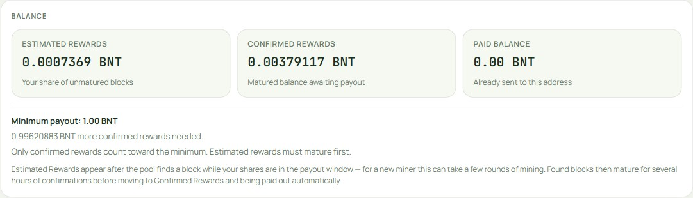
below minimum mobile
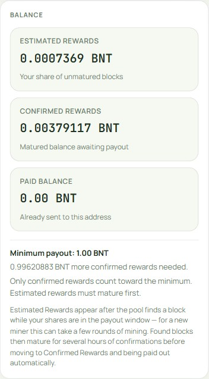
almost paid desktop
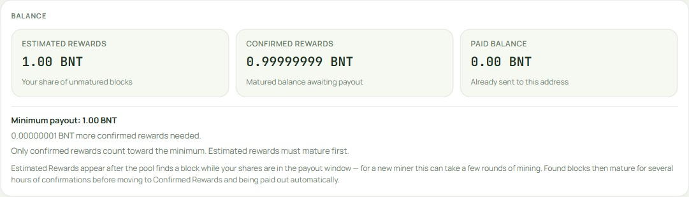
almost paid mobile
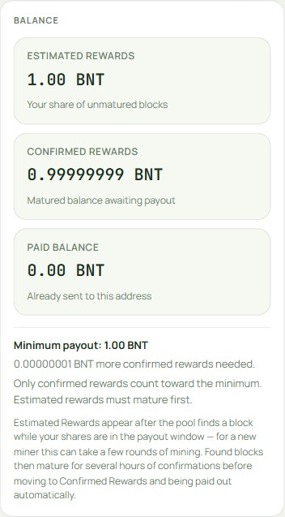
minimum met desktop
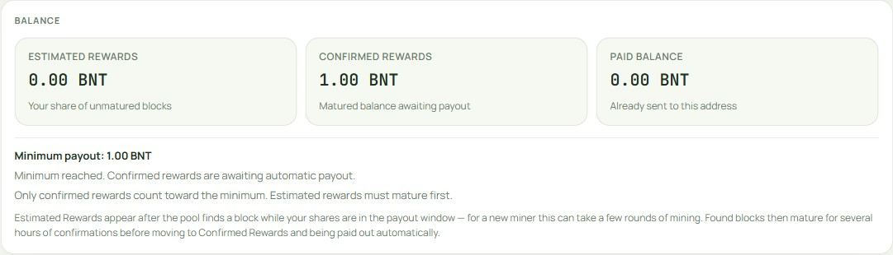
minimum met mobile
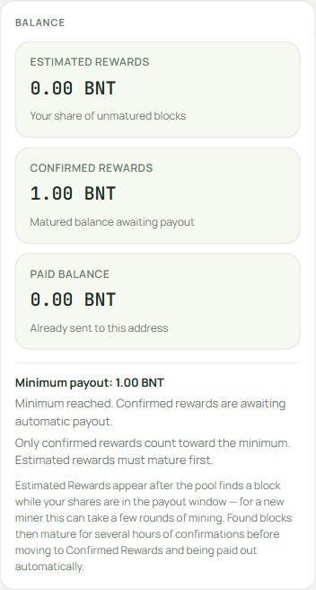
queued desktop
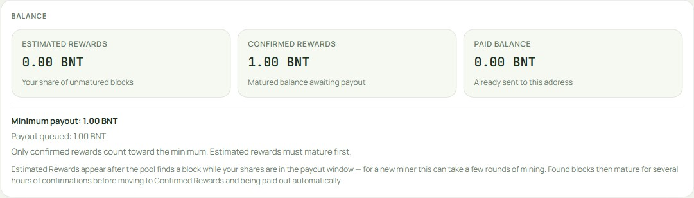
queued mobile
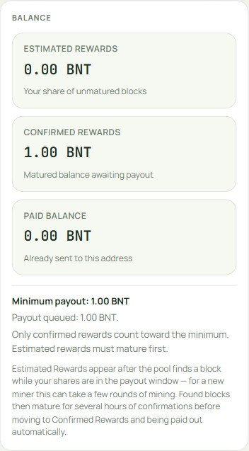
settings loading desktop
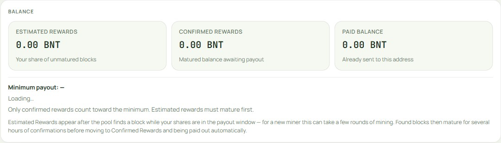
settings loading mobile
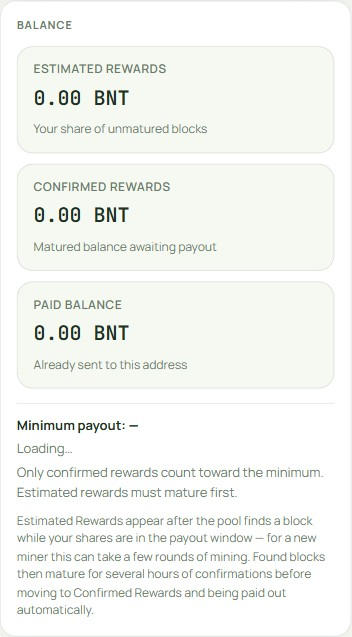
settings error desktop
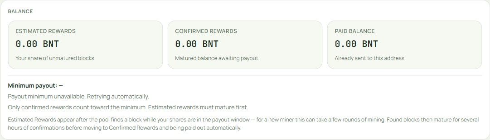
settings error mobile
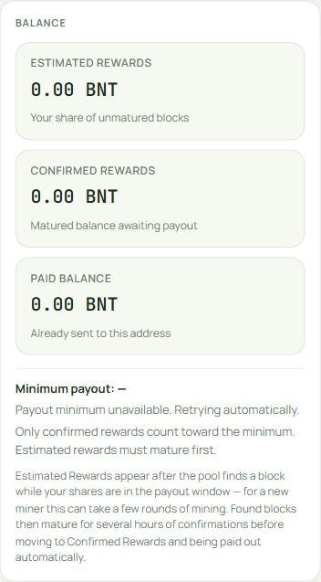
custom minimum desktop
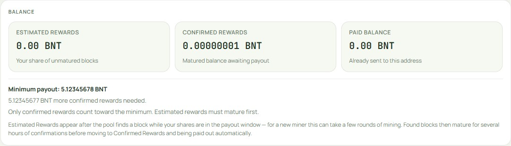
custom minimum mobile
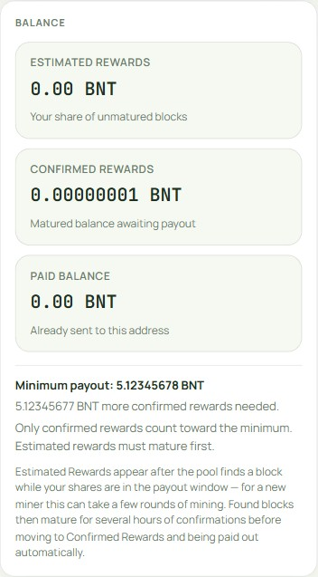
zero minimum desktop
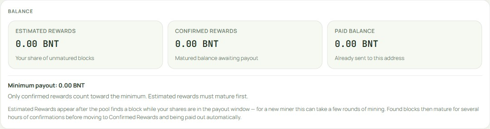
zero minimum mobile
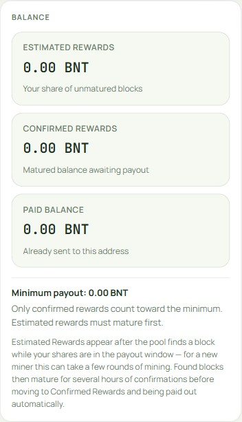